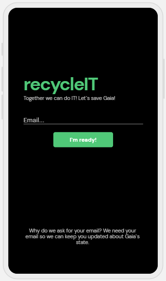
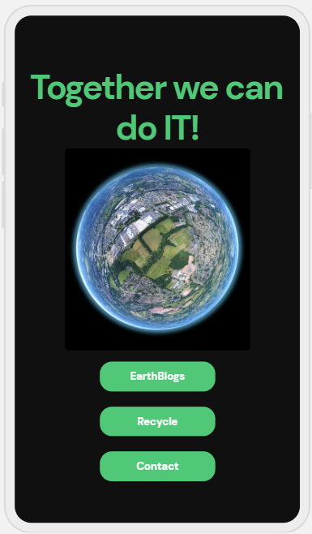
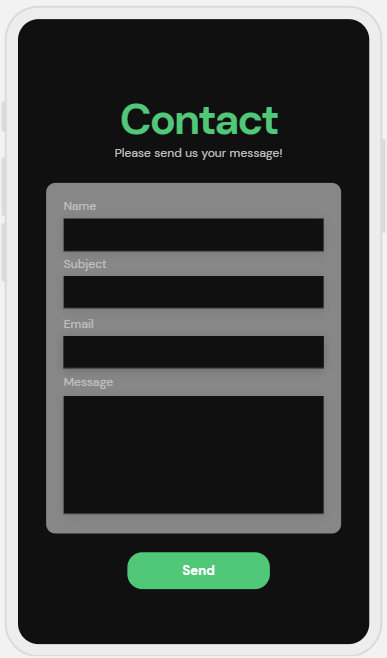
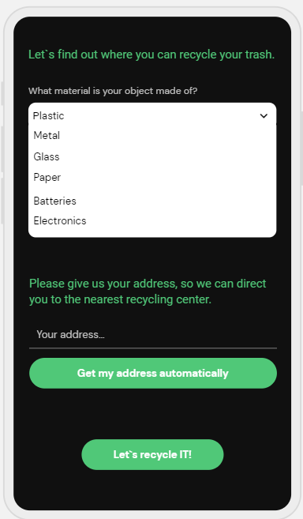
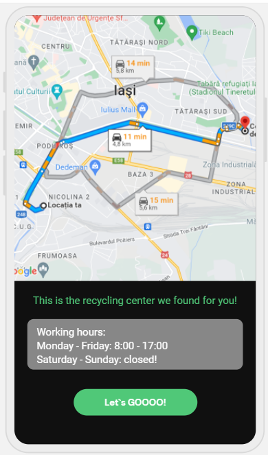

Introduction
1.1 Scope
recycleIT is an android application whos purpose is to make users more aware of climate change and the damage every one of us do to the Planet Earth. The app provides to the user blogs about recycling and climate change and ways in which we can decrease our own polution, how to recycle, when and where plus the garbage disposal trucks will have a way of organazing their routes so that they can be efficient.
1.2 Target audience
This document is destined to anyone who wants to learn how this application works and also anyone who wants to make a difference in this world and protect our planet.
1.3 The purpose of the application
The application is meant to help users recycle their trash so they can lower their carbon footprint and to help the municipal garbage disposal authorities to organize their routes in a more efficient way.
Description
1.1 Functionalities
Regular users of the application will be able to read different articles/blogs about recycling and other related subjects, will be able to find out where they can recycle different objects that they want to based on the material that is made of and also based on their location they will recieve a map of the nearest recycling center. Admin will be able to find the shortest and most efficient path to collect the garbage with a garbage disposal truck from different collecting points, besides being able to modify content of pages.
1.2 Categories of users
The application can be used by anyone who is familiar with a smartphone with android.
1.3 Operating environment
recycleIT is an android application that uses Kotlin for it`s functionalities making it runnable on every smartphone that with android.
External requirements
1.1 User interface
Connect page
Main page
Contact form
Get material of object and location page
Recycling center found map page
Functionalities
1.1 Connect with email
The user will provide the email address that they have so we are going to keep him/her updated about future content.
1.2 Blogs reading
After the user connected a new page will open and if he selects Earth Blogs he will be redirected to another page where he can choose to read a blog from a list.
1.3 Finding out where the user can recycle
From the main page the user can select the recycle button. After that a new page will appear where he will select the material that he wants to recycle, he will provide thier location and will press the Let`s recycle IT button. This way a map with the exact location of the nearest recycling center will be shown along side the working hours when the user can go to that recycling center.
1.4 Contact form
Users will be able to reach the admin of the application for future problems or questions.
1.5 Admin - Finding the most efficient and short path for garbage disposal trucks
After giving all the information needed a map will be shown with the shortest and most efficient path for garbage disposal trucks to follow for colecting.